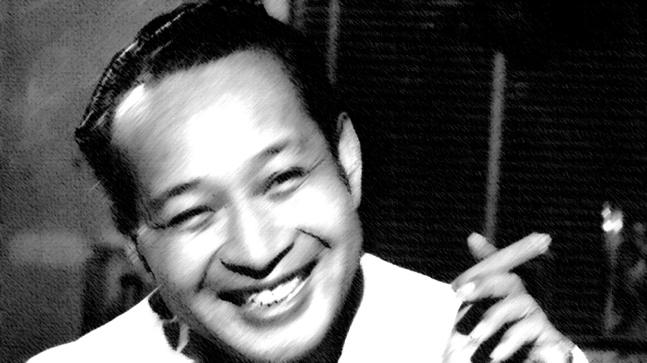

Selamat Datang di Jejak Soeharto
Website ini memberikan informasi singkat tentang Soeharto, Presiden kedua Indonesia yang memimpin selama 31 tahun.
Soeharto adalah salah satu tokoh paling berpengaruh dalam sejarah Indonesia modern. Sebagai Presiden yang menjabat sejak 1967 hingga 1998, kepemimpinannya membawa perubahan besar pada perkembangan politik, ekonomi, dan sosial bangsa ini. Di website ini, Anda dapat mempelajari:
- Biografi Singkat
- Karier Militer dan Politik
- Kepemimpinan Selama Orde Baru
- Kebijakan dan Pembangunan
- Kontroversi dan Kritik Terhadap Kepemimpinan
- Penghargaan dan Pengakuan
Kami juga menyediakan formulir bagi Anda yang ingin memberikan masukan atau informasi tambahan seputar Soeharto dan eranya, serta tabel data yang memuat berbagai informasi terkait, seperti daftar penghargaan, pencapaian, dan momen penting dalam sejarah kepemimpinannya.
Biografi Singkat
Muhammad Soeharto lahir pada tanggal 8 Juni 1921 di Desa Kemusuk, Yogyakarta. Ia adalah anak seorang petani sederhana, namun berkat ketekunan dan kecerdasannya, Soeharto berhasil mengukir sejarah sebagai salah satu pemimpin paling berpengaruh dalam sejarah Indonesia. Setelah melalui pendidikan militer di masa penjajahan Belanda, Soeharto kemudian memulai karier militernya yang gemilang, terutama saat terlibat dalam perjuangan kemerdekaan.
Soeharto menjadi Presiden Indonesia setelah peristiwa 1965, menggantikan Presiden Sukarno pada tahun 1967. Kepemimpinannya berlangsung selama 32 tahun hingga 1998, menjadikannya presiden terlama dalam sejarah Indonesia.
Karier Militer dan Politik
Soeharto memulai karier militernya dengan bergabung dalam KNIL (Tentara Kerajaan Hindia Belanda), kemudian menjadi bagian dari Tentara Nasional Indonesia (TNI) setelah kemerdekaan. Peran pentingnya terlihat jelas dalam berbagai operasi militer, seperti Serangan Umum 1 Maret 1949 di Yogyakarta. Karier militernya menanjak, dan pada tahun 1965, ia berhasil memimpin operasi penumpasan Gerakan 30 September (G30S/PKI), yang menjadi titik awal peralihannya ke dunia politik.
Setelah peristiwa ini, Soeharto ditunjuk sebagai Pejabat Presiden oleh Majelis Permusyawaratan Rakyat Sementara (MPRS) pada 12 Maret 1967, sebelum resmi menjadi Presiden Indonesia pada 27 Maret 1968.
Kepemimpinan Selama Orde Baru
Soeharto memimpin Indonesia dalam era yang disebut "Orde Baru." Di bawah kepemimpinannya, Soeharto berhasil membawa stabilitas politik dan ekonomi setelah masa kekacauan pasca kemerdekaan. Melalui program-program pembangunan, terutama Pelita (Pembangunan Lima Tahun), Indonesia mengalami pertumbuhan ekonomi yang pesat dan peningkatan infrastruktur yang signifikan.
Salah satu kebijakan Soeharto yang paling dikenal adalah program Repelita, yang bertujuan untuk meningkatkan kesejahteraan rakyat, mengurangi kemiskinan, dan mendorong pertumbuhan ekonomi melalui industrialisasi.
Kebijakan dan Pembangunan
- Revolusi Hijau, yang meningkatkan produksi pangan, khususnya padi, dan menjadikan Indonesia swasembada beras pada tahun 1984.
- Pembangunan jalan, jembatan, sekolah, dan rumah sakit di seluruh Indonesia, serta pendirian perusahaan-perusahaan milik negara (BUMN) untuk memperkuat perekonomian nasional.
- Kebijakan luar negeri yang bebas dan aktif, dengan menjalin hubungan baik dengan negara-negara Barat dan Timur.
- Mengedepankan prinsip stabilitas keamanan untuk menjaga kelangsungan pembangunan nasional.
Kontroversi dan Kritik Terhadap Kepemimpinan
- Otoritarianisme
- KKN (Korupsi, Kolusi, dan Nepotisme)
- Pelanggaran HAM
Kebebasan politik dibatasi selama era Orde Baru, dan kekuatan militer memainkan peran besar dalam politik.
Soeharto dan keluarganya sering dikaitkan dengan tuduhan praktik KKN, terutama di akhir masa pemerintahannya.
Kebijakan keamanan yang ketat, termasuk tindakan represif terhadap kelompok yang dianggap sebagai ancaman terhadap stabilitas, seperti peristiwa di Timor Timur dan Tanjung Priok.
Penghargaan dan Pengakuan
- Jenderal Besar TNI (1983)
- Penghargaan dari FAO (1985) atas program swasembada pangan